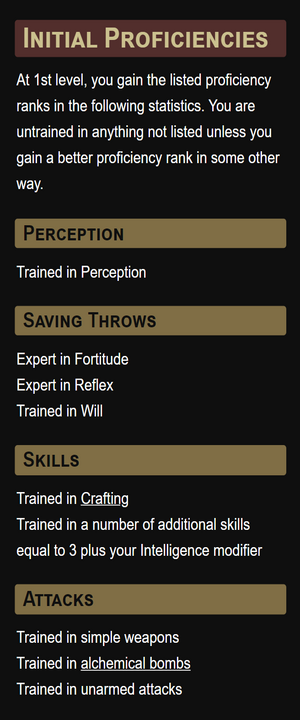
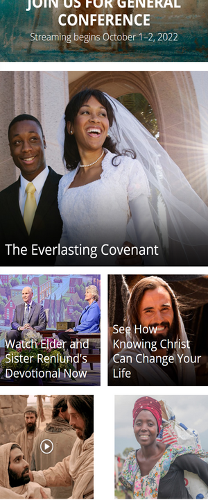
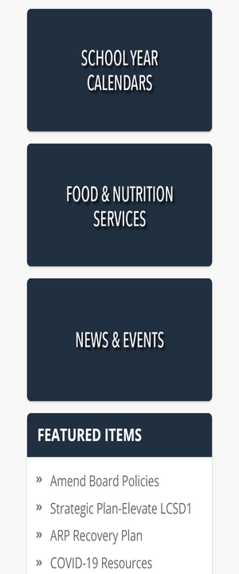

White Space and Clean Design
Archives of Nethys
2e.aonprd.com The lines are neatly spaced, with room between them. Each section is clearly labeled with bold text highlighted in colors noting categories and subcategories. The font is clear and easy to read.
Alignment
Church of Jesus Christ
churchofjesuschrist.org The thumbnails are all nicely aligned with each other both vertically and horizontally. This makes it look neat and organized, and helps draw the eyes.
Contrast
Laramie County School District
laramie1.org The colors contrast sharply with each other, making the text stand out. It draws the eyes to the navigation categories and also helps to make the text easier to read.